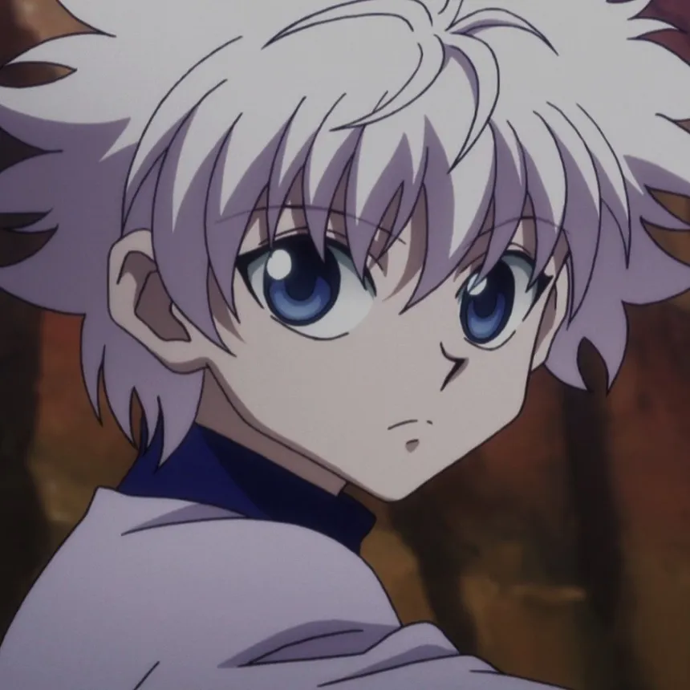
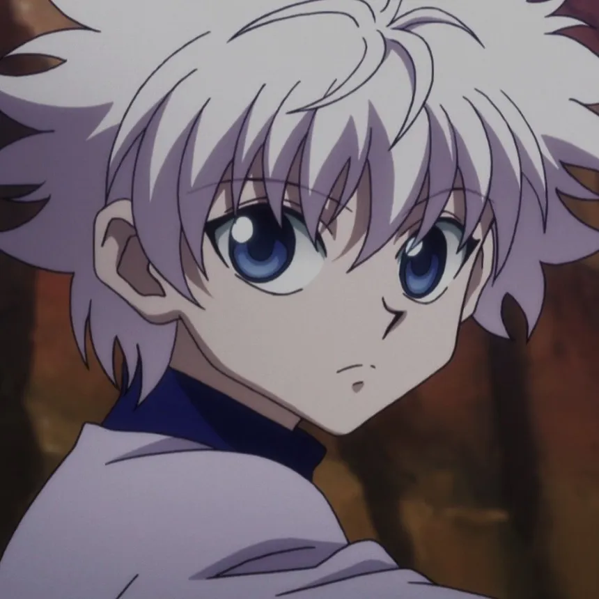

Animé fini, 148 épisodes
Action, Aventure, Drame, Fantasy, Nekketsu
Gon Freecss est un jeune garçon de 12 ans qui rêve de devenir « Hunter ». Les « Hunter » sont des aventuriers d’élites dans des domaines aussi différents que la cuisine, l’archéologie, la justice… Ils peuvent être aussi chasseurs de primes ou bien consultants. Gon va se présenter à l’examen afin de retrouver son père qu’il ne connaît pas, l’un des plus grands « Hunter » de son temps. 3 autres aspirants « Hunter » vont se rapprocher de Gon, afin de former une équipe solide et soudée.
 


Netflix
Twix
> Mouais, bien sans plus